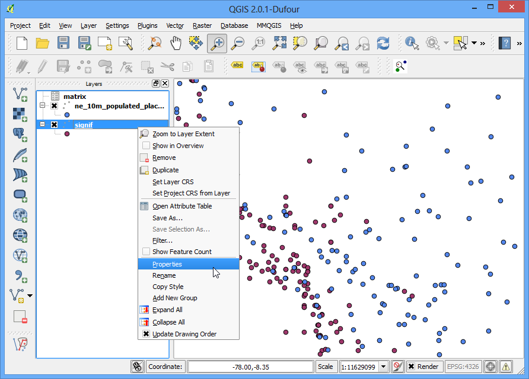

Interpoleren van puntgegevens
[ Download PDF A4 Letter ]
Interpolatie is een algemeen gebruikte techniek in GIS om een doorlopend oppervlak te maken uit afzonderlijke punten. Veel van de fenomenen in de echte wereld zijn doorlopend - hoogten, bodems, temperaturen etc. Als we deze oppervlakten voor analyses willen modelleren, is het onmogelijk metingen te doen over het gehele oppervlak. Daarom worden veldmetingen genomen op verschillende punten in het oppervlak en dan worden tussenliggende waarden berekend door een proces, genaamd ‘interpolatie’. In QGIS wordt interpolatie verricht met behulp van de ingebouwde plug-in Interpolatie.
Overzicht van de taak
We zullen veld-dieptemetingen gebruiken voor Lake Arlington in Texas en een hoogte-reliëfkaart en contouren maken uit deze metingen.
Andere vaardigheden die u zult leren
Contouren maken uit puntgegevens.
Maskeren van waarden Geen gegevens uit een rasterlaag.
Labels toevoegen aan een vectorlaag.
Procedure
Open QGIS. Ga naar

Blader naar het gedownloade bestand Shapefiles.zip en selecteer dat. Klik op Open.

Houd, in het dialoogvenster Selecteer te laden vectorlagen..., de Shift-toets ingedrukt en selecteer de lagen Arlington_Soundings_2007_stpl83.shp en Boundary2004_550_stpl83.shp. Klik op OK.

U zult 2 lagen zien geladen in QGIS. De laag Boundary2004_550_stpl83 vertegenwoordigt de omtrek van het meer. Deselecteer het vak ernaast in de lagenlijst.

Dit zal de lagen laten zien van de tweede laag Arlington_Soundings_2007_stpl83. Hoewel de gegevens eruit zien als lijnen is het een serie punten die vrij dicht bij elkaar liggen.

Klik op het pictogram Zoom en selecteer een klein gebied op het scherm. Als u meer inzoomt zult u de punten zien. Elk punt vertegenwoordigt een meting door een Depth Sounder op die locatie opgenomen met een gereedschap DGPS.

Selecteer het gereedschap Objecten identificeren en klik op een punt. U zult zien dat het paneel :Identificatieresultaten aan de linkerkant zal worden weergegeven met de waarden voor de attributen van dat punt. In dit geval bevat het attribuut ELEVATION de diepte van het meer op die locatie. Omdat onze taal is een diepteprofiel en hoogte-contouren te maken, zullen we deze waarden gebruiken als invoer voor de interpolatie.

Zorg er voor dat u de plug-in Interpolatie heeft ingeschakeld. Bekijk Plug-ins gebruiken om te weten te komen hoe plug-ins moeten worden ingeschakeld.. Ga, als hij is ingeschekeld, naar .

Selecteer, in het dialoogvenster Interpolatie-plugin, Arlington_Soundings_2007_stpl83 als de Vectorlagen in het paneel Invoer. Selecteer ELEVATION als het Interpolatie attribuut. Klik op Toevoegen. Wijzig de waarden van Celgrootte X en Celgrootte Y naar 5. Deze waarde is de grootte van elke pixel in het uitvoerraster. Omdat onze brongegevens in een geprojecteerd CRS zijn met Feet-US als eenheden, gebaseerd op onze selectie, zal de grootte van het raster 5 feet zijn. Klik op de knop ... naast Uitvoerbestand en noem het uitvoerbestand elevation_tin.tif. Klik op OK.
Notitie
Resultaten van interpolatie kunne significant variëren, gebaseerd op de methode en de parameters die u kiest. Interpolatie in QGIS ondersteunt de methoden Triagulated Irregular Network (TIN) en Inverse Distance Weighting (IDW) voor interpolatie. De methode TIN wordt algemeen gebruikt voor hoogtegegevens waar de methode IDW wordt gebruikt voor het interpoleren van andere typen gegevens zoals minerale concentraties, bevolking etc. Bekijk de module Ruimtelijke analyse van de documentatie van QGIS voor meer details.

U zult de nieuwe laag elevation_tin zien geladen in QGIS. Klik met rechts op de laag en selecteer Zoom to layer.

Nu zult u het volledige bereik van het gemaakte oppervlak zijn. Interpolatie geeft geen nauwkeurige resultaten buiten het gebied van de verzamelde gegevens. Laten we het resulterende oppervlak clippen met de begrenzing van het meer. Ga naar .

Noem het Uitvoerbestand elevation_tin_clipped.tif. Selecteer de Clipping modus als Maskeerlaag. Selecteer Boundary2004_550_stpl83 als de Maskeerlaag`. Klik op OK.

Een nieuw raster elevation_tin_clipped zal worden geladen in QGIS. Wzullen nu deze laag opmaken om het verschil in hoogten te laten zien. Merk de min- en max-waarden voor hoogte op van de laag elevation_tin. Klik met rechts op de laag elevation_tin_clipped en selecteer Eigenschappen.

Ga naar de tab Stijl. Selecteer Rendertype als Enkelbands pseudokleur. Selecteer, in het paneel Genereer nieuw kleurenpalet, de kleurenbalk Spectral. Omdat we, in tegenstelling tot een hoogtekaart, een dieptekaart willen, selecteer het vak:Inverteer. Dit zal blauw aan diepe gedeelten toewijzen en rood aan minder diepe gebieden. Klik op Classificeren.

Schakel naar de tab Tranparantie. We willen de zwarte pixels uit onze uitvoer verwijderen. Voer 0 in als de Aanvullende ‘no data’-waarde. Klik op OK.

Nu heeft u een hoogte-reliëfkaart voor het meer, gegenereerd vanuit de individuele metingen van de diepte. Laten we nu de contouren genereren. Ga naar .

In het dialoogvenster Contour, voer contours in als het uitvoerbestand voor contourlijnen (vector). We willen contourlijnen genereren met een interval van 5ft, voer dus 5.00 in als de Interval voor contourlijnen. Selecteer het vak Attribuutnaam. Klik op OK.

De contourlijnen zullen worden geladen als de laag contours als het proces is voltooid. Klik met rechts op de laag en selecteer Eigenschappen.

Ga naar de tab Labels. Selecteer het vak Deze laag labelen met en selecteer ELEV als het veld. Selecteer Gebogen als type Plaatsing en klik op OK.

U zult zien dat elke contourlijn toepasselijk zal zijn gelabeld met de hoogte langs de lijn.